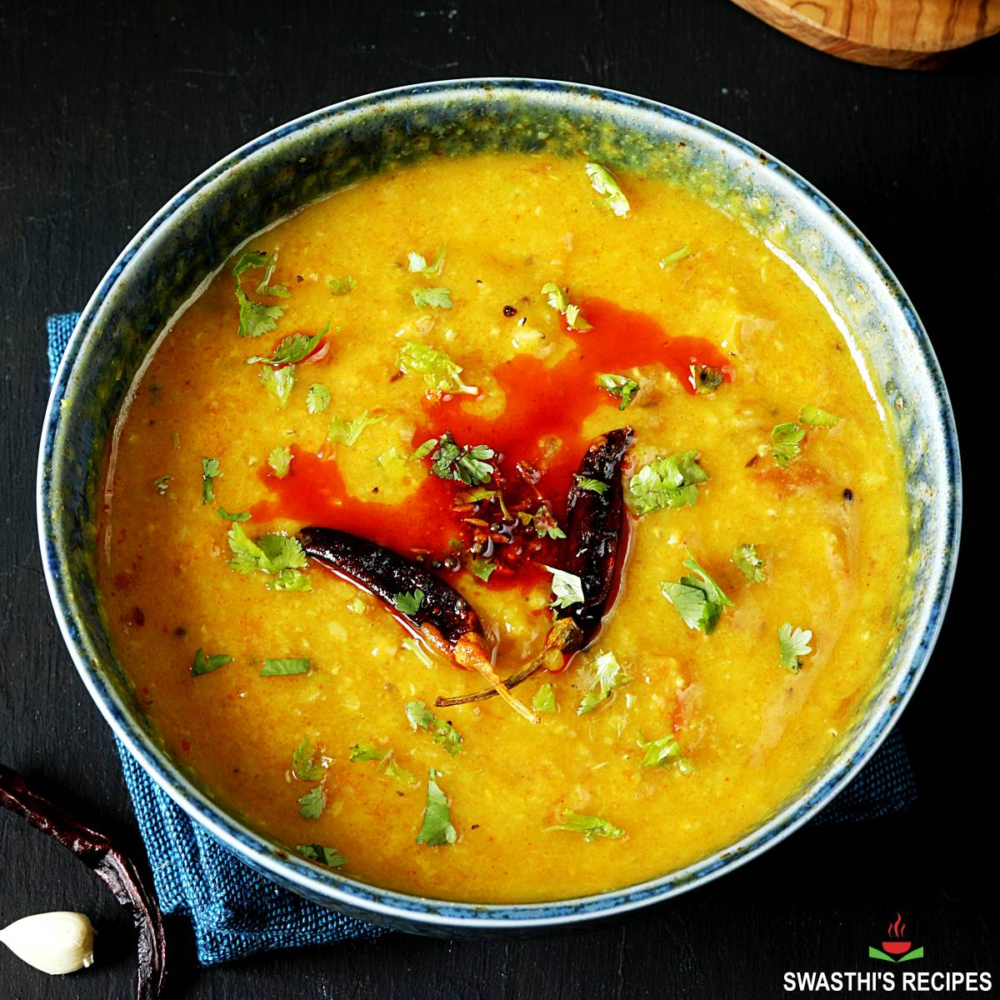

Daal Masoor

Masoor Daal
Masoor dal (Lens culinaris), also called red lentil, is a staple food in every Indian household. It is widely cultivated in warm, tropical and temperate zones for its edible and nutritious seeds. In addition, it is an important source of protein for the vegetarian population in developing countries
Go Back